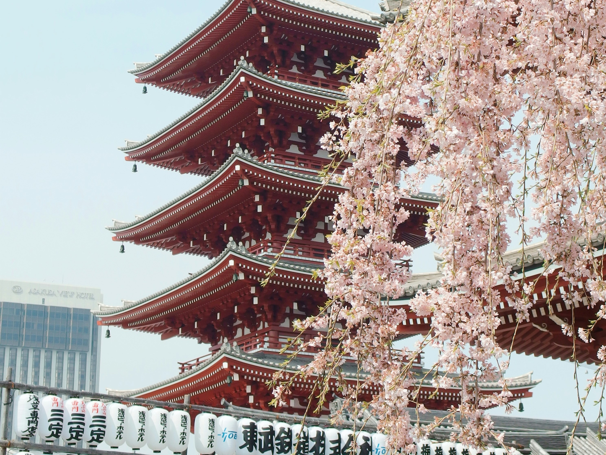
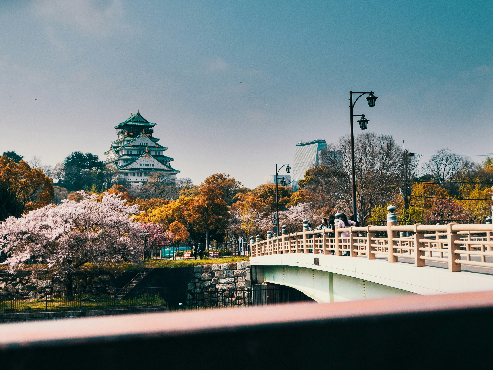

Blüte Zeiten
Natürlich haben verschiedene Städte verschiedene Blüte Zeiten. Diese (Vorhersagen) sind hier aufgelistet:
Tokyo
Start: 24. März
Spätestens: 31 März

Kyoto
Start: 27. März
Spätestens: 5. April
Osaka
Start: 28. März
Spätestens: 4. April
